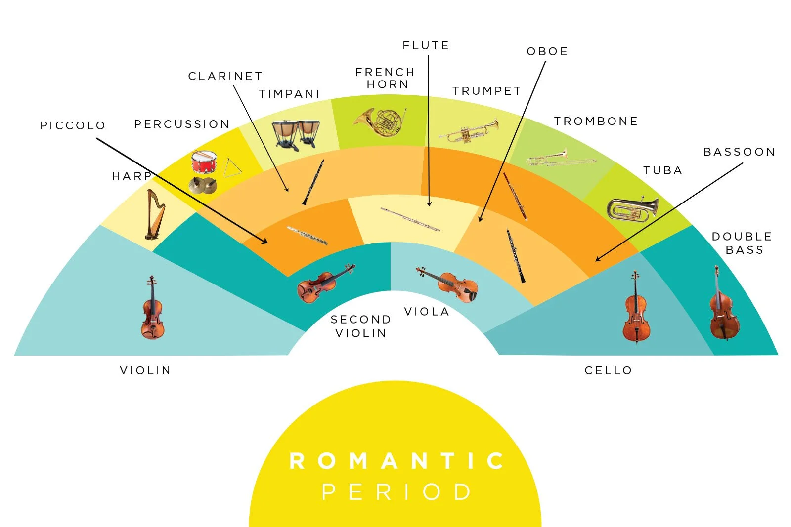

The piano and the programatic music
Romantic instrumental music is more varied and expressive than Classical music.
Piano pieces
The piano (improved since the Classical period) became the leading instrument, both in virtuosic works and in short lyrical pieces. It gradually took the place of Classical chamber music.
- Nocturnes: lyrical and calm melodies. Listening -> Nocturne in mi flat major Op. 9 Nº2 by Chopin.
- Études: virtuosic pieces designed to overcome technical difficulties. Listening- > Étude in mi major Op.10 Nº 3 "Tristesse" by by Chopin.
- Preludes: short compositions, often free in form, expressing a moment or feeling. Listening -> Prelude in mi minor Op. 28, No. 4 by Chopin.
Orchestras and ballets
The Romantic symphony, the concerto for soloist and orchestra, ballets, and programmatic music (symphonic poem) also developed. This music describes stories, landscapes, or extra-musical ideas. Sonata form is broken, modified, and expression becomes more important. Works are longer, more complex, and more emotionally intense than in the Classical period. Listening:
- Symphony Nº 9 in mi minor. Fourth movement by Antonín Dvořák.
- Piano Concerto No. 1 in si-flat minor, first movement (modified sonata form) by Piotr Ilich Tchaikovsky.
- Swan Lake, Act IV Finale by Piotr Ilich Tchaikovsky.
- The Moldau (symphonic poem) from Má vlast Nº2, by Bedřich Smetana.
- 1812 Overture by Piotr Ilich Tchaikovsky.
Romanticism instruments
The Romantic orchestra grew enormously in size and timbral variety. Wind instruments were improved and the percussion section expanded. The piano reached 88 keys and has kept this number to the present day.
A fundamental figure appeared: the conductor, who became essential to coordinate large instrumental forces and to give a coherent and expressive interpretation of the work. The conductor became an artist, with a personal musical vision. The conductor often played an instrument while leading the orchestra with a baton (batuta).
